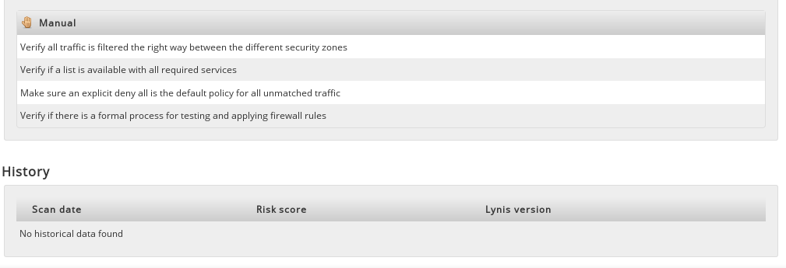
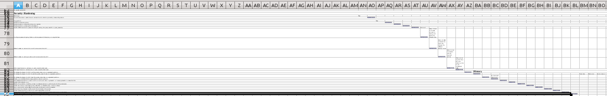

Lynis Enterprise – The 1st Encounter

I recently got my hands on a trial of Lynis Enterprise, the commercial SaaS version of the open source Linux system auditing software Lynis. In exchange I promised to write about my experience here and share some feedback with the developers.
I could spent some time with the tool and write about it afterwards, but instead I decided to write down my thoughts as I stumble across things. That means, that some questions might get answered later down the road, or that I write stuff that seems stupid, but in return this post will be more closely to how really I experienced my first encounter with Lynis. My thoughts? Unfiltered? On (digital) paper? This will get weird - you have been warned!
I did run the open source version once on one of my servers and scrolled through the results, so to keep this fair, this is what I knew before I started.
- Lynis is in apt-get, but (of course) not in its most current version
- Out of the box, it doesn't run with normal user privileges (that can be fixed though)

- Lynis can simply be downloaded from cisofy.com and installed
- Lynis ./include/const folder must belong to root if it is run with root privileges
- Lynis results look like this, but in color.
Now that we're on equal footing, let's get started.
Setup
The first thing I noticed after I logged into the web console was this.
Which is not really a problem, but even though I don't have anything in production at that point, I still immediately asked myself "When exactly will it expire", followed by "and what type of license do I have?". The later is a result of me not paying for the trial, otherwise I would have probably known about the type of license I ordered. Or maybe I wouldn't have. Who knows how many licenses I have to manage.
I almost instantly dropped the questions, as all I wanted to do is setup my first server to send data to LE. Trying to do so, I took a closer look at the overview page, which looks like this.
"OK, so that's my username, I have a trial account, my email, no messages, no subscriptions,... hm, but how do I get started. What's that down there at the bottom, Control Panel, System, Compliance... No wait, that's just the change log. Maybe in the navigation panel? Ah, there it is, in the box on the right. First time user."
Don't ask me why it took me so long to find this, but somehow I kept missing it. It could just be me, but I feel if you login for the first time, that box should present itself a little bit more.
Now then, let's got to the systems page to add the first host...
Thoughts?
Hm, adjust config and run with --upload switch.
Looks easy enough. But what's that -k option?
For self signed certificates?
Maybe that's for the on-premise version.
Yeah probably, but for a moment I felt unsure about this whole thing...
Sending my data to the cloud, to a unsigned cert?
Nah, it'll be fine!
...editing config
...copy paste command
sudo lynis audit system --quick --upload
Damn, I ran the outdated apt-get version...
sudo ./lynis audit system --quick --upload
Dashboard
The Dashboard showed the one host in a "Technical" overview, which I assume includes every option the Dashboard has to offer, while the other two "Business" and "Operational" only showed data regarding those areas.
What caught my eye though was that "Data Loss" was listed under "Technical Risk", while at the same time, right next to it a nice, all green circle stated "All systems are compliant". That strikes me as odd, although I never really thought that being compliant means being safe. Still, it seems strange seeing it on a dashboard for some reason.
But what else is there? One system, zero outdated. Zero systems or Lynis clients? What's that Average rating. Average compared to? And based on? No events.
But I though I had risk of data loss. By the way, where can I see what's that all about exactly? Probably by clicking on the host link. But first I'll check out the tags.
Hm, white font color on white/gray background. For the record, the tags are "firewall", "ipv6", "iptables" and "unknown". The last one fits my question perfectly. "What are these tags for and why is data loss not one of them?"
I know what tags are for - in general, but why these, and why not data loss. That seems to be the main risk that was identified on this host. Speaking of data loss, let's look for more detail on that.
Clicking on the host link brought me to this page.
What have we got here, OS information, Network information and Other. IPv6. Does this mean IPv6 is enabled or that is has been deemed as securely configured?
There we have the compliance check again, and there is a bit more information on the average rating. So it's average risk rating and it's a comparison to the same OS and over all scanned systems.
I assume at this point, that this only includes my systems, since there is only one. The tags are readable this time. Scrolling down...
OK, so file integrity was gray because no checks have been performed. Is there a plugin for that or what do I have to do to get them. Maybe just another switch?
I think at some point I need to dig through the man page, but for now let's just keep wandering around.
Wait, I am compliant because I have no policies assigned? That's an easy way out... and a bit confusing to be honest. Why wasn't this gray like the file integrity checks?
Networking doesn't say anything about being secure, so I guess the green checkmark is about IPv6 being enabled. The same goes for the firewall audit. What else is there?
No expired certificates, one warning about a misconfiguration in /etc/resolv.conf and a bunch of suggestions to harden the host. These look eerily similar to the compliance checks from Nessus, although they are quite fewer in numbers.
The only thing that really goes against my personal recommendation is enabling password aging limits. I simply don't believe that chaining passwords increases security, but that's a discussion for another time and place.
Last but not least, there are a few manual tasks and an empty scan history.

System Overview
Move along, nothing to see here!
Well, that's not entirely true. While there is only one host listed here, it's easy to see why this page might get useful later on.
21 Suggestions, 0 Warnings, the host version and name, last updated, Lynis version and of course compliance trickery. With multiple hosts, this will definitely come in handy, although I'm missing a "sort by x" feature.
Show hidden controls? Of course!
Bummer.
Compliance
Right, we haven't done this one yet. We got the checkmark though, that fine right?
Hm, but High Secure does have a nice ring to it and I wanna try the others as well. Maybe I'll even create a custom one – for Cyber. But before that, let's finish the round through the navigation panel.
File Integrity
This page doesn't give much more information then the gray area in the dashboard did. I still wonder why Lynis didn't run file integrity checks. Or what I have to do in order to get them running. This would be a good place for a quick howto. hint
Reports
Ignoring the Improvement Plan page, which is more of a documentation page then a feature, brought me to reports.
Systems and applicable controls is basically just a list of hosts with their associated suggestions. It's nice to have it all in one place, but not worth yet another giant screenshot.
My systems overview and Systems without compliance policy is fairly obvious. It's the same thing as the Systems Overview page, with or without compliance policies. There is but one difference.
Needless to say, I instantly copied the report data into LibreOffice Calc. The result looks... well, bad.

I know, it's to small to read, but that's the overall structure of the report. Something tells me that won't be used much by anyone - unless I just did it wrong, or Libre Calc is nobody's favorite spreadsheet software. Anyway, an export to spreadsheet, csv, pdf function would be swell.
Configuration
The final page in the main navigation is configuration, which didn't bring much enlightenment to tell the truth.
So both Lynis and Lynis Control Panel are up to date. I guess the later is just interesting to people running the on premise version. No Lynis plugins found. Ok, so how do I get some?
This would be the right place for a link to, say, a plugin repository or at least the part of the documentation explaining how to get and use plugins.
But let's continue with the Modules section. Most of these were either links to pages we already saw, or simply not clickable. The others were rather short in content.
Ok, so no events. That might change once a few more hosts are scanned.
Nope. Let's skip that.
Ah, there is something new. Security Controls. What's that for? Maybe the link will tell us more?
So it's advice on how to correct the specified flaws. Neat! It even has Ansible, CfEngine, Chef and Puppet snippets.
Or it doesn't. What's the checkmark for then I wonder.
Summary
What you've just read is literally a brain dump. I wrote down everything while looking at Lynis Enterprise for the first time. I don't really have an opinion on it yet, other that I like it (no reason) and that I think it has potential to help Linux admins keep an eye on their hosts.
I will take a closer look on file integrity and compliance checks and write about that in a more traditional manner. I will also try to figure out, how Lynis can benefit penetration testers in their work. It is clearly thought of as a program that should be used for continuous auditing, so I'm curious how much help it will be in one time assignments. Especially in regards to the difference between the enterprise and open source versions.
After that, I probably have to take a closer look at the Lynis config file and documentation to answer questions like "Can I tell Lynis that password aging is stupid" or "How do I add/enable/run plugins?".
PS: @Michael, if you're reading this. I like the Business dashboard for management, but I still don't know why I'm at risk of data loss. That's probably the first question any auditor will have to answer. Maybe I just missed it, or maybe a link to the cause in the dashboard isn't such a bad idea.